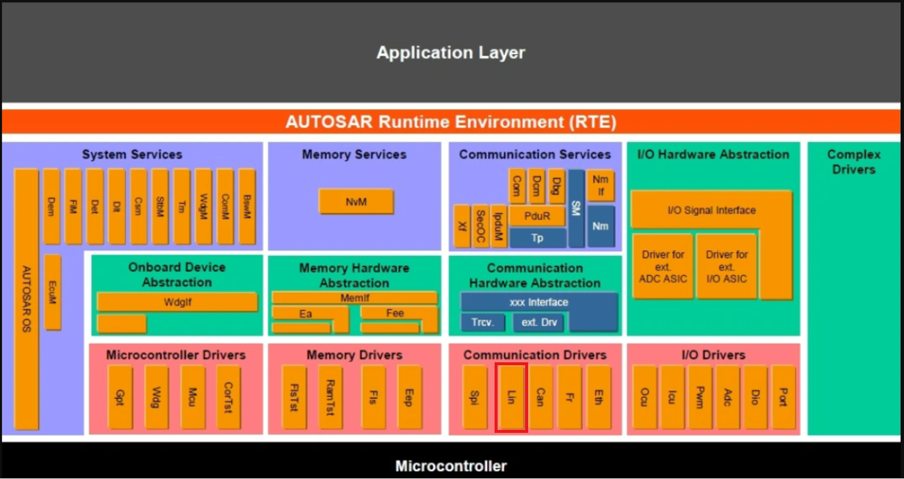
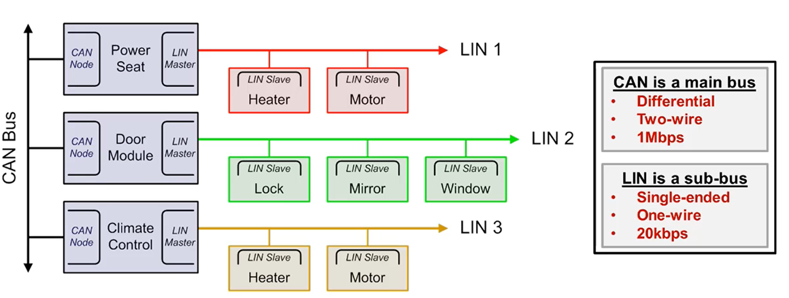
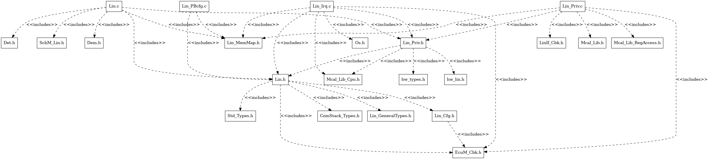
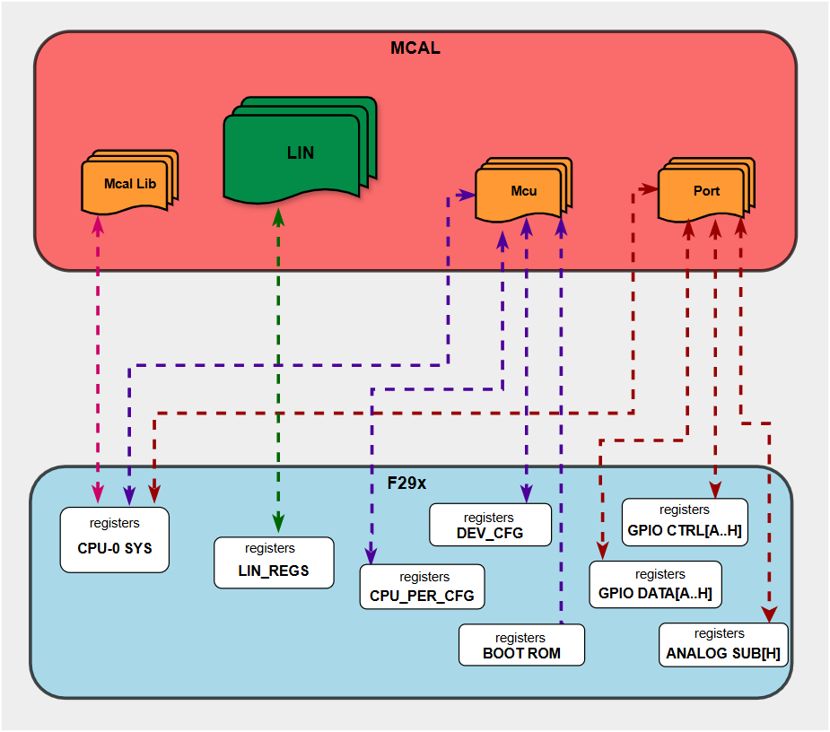
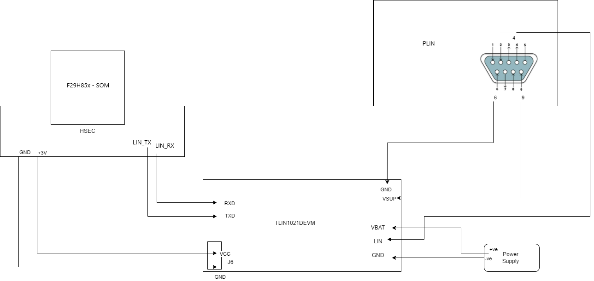

4.6. LIN Module
4.6.1. Acronyms and Definitions
Abbreviation/Term |
Explanation |
|---|---|
AUTOSAR |
Automotive Open System Architecture |
COM |
Communication |
ECU |
Electronic Control Unit |
EcuM |
ECU Manager |
DEM |
Diagnostic Event Manager |
DET |
Default Error Tracer |
ISR |
Interrupt Service Routine |
LIN |
Local Interconnect Network |
MCAL |
Micro Controller Abstraction Layer |
MCU |
Micro Controller Unit |
OS |
Operating System |
PDU |
Protocol Data Unit |
PID |
Protected ID |
PLL |
Phase-Locked Loop |
RAM |
Random Access Memory |
RX |
Reception |
SCI |
Serial Communication Interface |
SDU |
Service Data Unit |
SFR |
Special Function Register |
SPAL |
Standard Peripheral Abstraction Layer |
SRS |
Software Requirement Specification |
SW |
Software |
SWS |
Software Specification |
TP |
Transport Layer |
TX |
Transmission |
UART |
Universal Asynchronous Receiver Transmitter |
XML |
Extensible Markup Language |
4.6.2. Introduction
This document details AUTOSAR BSW LIN module implementation
Supported AUTOSAR Release |
4.3.1 |
|---|---|
Supported Configuration Variants |
Post-build, Pre-Compile |
Vendor ID |
LIN_VENDOR_ID (44) |
Module ID |
LIN_MODULE_ID (82) |
LIN stands For Local Interconnect Network. The LIN driver is a communication driver and is part of the micro-controller abstraction layer (MCAL). It performs the hardware access and offers a hardware independent API to the upper layer. The only upper layer, which has access to the LIN driver, is the LIN Interface.
A LIN driver can support more than one channel/Instance. This means that the LIN driver can handle one or more LIN channels as long as they are belonging to the same LIN hardware unit.

Fig. 4.16 Lin MCAL AUTOSAR
4.6.3. Functional Overview
As the amount of electrical systems and components continue to grow as automobiles become more intelligent, safe, and comfortable. The growth of these components and systems demand a need for communication transceivers, to facilitate their interaction in the most advantageous way possible for manufacturers. LIN was developed to manage communication between these components and systems in an efficient and straightforward fashion, where the bandwidth and versatility of CAN was not needed; though in most instances, it is a sub-bus to the CAN bus.

Fig. 4.17 LIN Overview
The LIN standard is based on the SCI (UART) serial data link format. The communication concept is single-commander/multiple-responder with a message identification for multi-cast transmission between any network nodes.
4.6.4. Hardware Features
4.6.4.1. Hardware Features supported
Compatibility with LIN 1.3,2.0 and 2.1 protocols
Configurable Baud rate up to 20 kbps
Two external pins: LINRX and LINTX
Multi-buffered receive and transmit units
2^31 programmable transmission rates with 7 fractional bits
Wake-up on LINRX dominant level from transceiver
Identification masks for message filtering
Automatic bus idle detection
Capability to use Direct Memory Access (DMA) for transmit and receive data
Update wake-up/go to sleep
Automatic commander header generation
Programmable synchronization break field
Synchronization field
Identifier field
Responder Automatic Synchronization
Synchronization break detection
Optional baud rate update
Synchronization validation
Automatic wake-up support
Wake-up signal generation
Expiration times on wake-up signals
Error detection
Bit error
Bus error
No-response error
Checksum error
Synchronization field error
Parity error
2 interrupt lines with priority encoding for:
Receive
Transmit
ID, error, and status
Support for LIN 2.0 checksum
Enhanced synchronizer finite state machine (FSM) support for frame processing
Enhanced handling of extended frames
Enhanced baud rate generator
4.6.4.2. Not supported Features
Apart from Wake up Interrupt, support for the rest of the available interrupts are disabled by the driver. Wakeup Interrupt support is enabled as per autosar requirement. For errors or status checking, Polling method is being implemented.
Current Transmission Abort is not supported by Hardware hence no support for transmission abort by Lin Driver.
Timeout is not needed by the hardware as there are no register reads in loop for timeout error to occur hence Production/TimeOut errors reporting is also not Supported.
4.6.4.3. Non compliance
Below AUTOSAR requirements are partially supported for LIN driver:
SWS_Lin_00207 : Constants, global data types and functions that are only used by LIN driver internally, are declared in Lin.c.
Partial Rejection Reason : Internal Function are also declared in Lin_Priv.h File.
SWS_Lin_00235 : Icu_DisableNotification/Icu_EnableNotification.
Partial Rejection Reason : ICU enable/disable notification is not needed as LIN IP can be accessed directly from Microcontroller/CPU Core
SWS_BSW_00042 : Detection of Development Errors: The detection and reporting of Development errors shall be performed only if the configuration parameter for detection of Development errors is set
Partial Non Compliance Reason : Few Null pointer input parameter checks are needed irrespective of Development errors is set, to handle MISRA requirement.
SWS_Lin_00209 : Lin_Wakeup: During the state transition from LIN_CH_SLEEP to LIN_CH_OPERATIONAL the LIN Driver shall ensure that the rest of the cluster is awake. This is achieved by issuing a wake-up request, forcing the bus to the dominant state for 250 μs to 5 ms
Partial Non Compliance Reason : The LIN hardware IP used in F29x has a limitation when transmitting a standard wakeup signal, which can cause the hardware to enter an undefined state. To mitigate this issue, the driver implements a workaround by using a LIN header frame with a configurable ID (LinWakeupId) instead of the standard wakeup signal. This approach conforms to the LIN 2.1 specification while avoiding the hardware limitation. The LinWakeupId parameter can be configured in the EB Tresos configurator and should be set to an unused ID in the LIN network to prevent conflicts with actual communication frames.
Below AUTOSAR requirement is rejected for LIN driver:
SWS_Lin_00074 : The function Lin_GoToSleep shall terminate ongoing frame transmission of prior transmission requests, even if the transmission is unsuccessfully completed.
Rejection Reason : Hardware limitation. Transmission Abort is not supported by Lin Hardware.
4.6.5. Source files
📦f29h85x_mcal
┣ 📂build
┣ 📂docs
┣ 📂drivers
┃ ┣ 📂BSW_Stubs
┃ ┣ 📂Can
┃ ┣ 📂Dio
┃ ┣ 📂Gpt
┃ ┣ 📂hw_include
┃ ┣ 📂Lin
┃ ┃ ┣ 📂include
┃ ┃ ┃ ┣ 📜Lin.h : Contains the APIs of the LIN driver to be used by upper layers.
┃ ┃ ┃ ┗ 📜Lin_Priv.h : LIN private header file which contains the private functions declarations, etc.
┃ ┃ ┣ 📂src
┃ ┃ ┃ ┣ 📜Lin.c : Contains the implementation of the APIs for LIN driver.
┃ ┃ ┃ ┣ 📜Lin_Irq.c : LIN interrupt source file which contains the implementation for LIN interrupts handlers.
┃ ┃ ┃ ┗ 📜Lin_Priv.c : Contains Functions that supports the APIs for LIN driver.
┃ ┃ ┗ 📜CMakeLists.txt
┃ ┣ 📂Mcal_Lib
┃ ┣ 📂Mcu
┃ ┣ 📂Port
┣ 📂examples
┣ 📂plugins
┣ 📜CMakeLists.txt
┗ 📜CMakePresets.json

Fig. 4.18 Lin Header File Structure
4.6.6. Module requirements
4.6.6.1. Memory Mapping
Will be added in later release
4.6.6.2. Error Handling
4.6.6.2.1. Development Error Reporting
Those errors shall be detected and fixed during development phase. In most cases, those errors are software errors. The detection of errors that shall only occur during development can be switched off for production code. Development errors are reported to the DET using the service Det_ReportError(),when enabled. The driver interface contains the MACRO declaration of the error codes to be returned.
4.6.6.3. Error codes
Type of Error |
Related Error code |
Value (Hex) |
|---|---|---|
API service used without module initialization |
LIN_E_UNINIT |
0x00 |
API service used with an invalid or inactive channel parameter |
LIN_E_INVALID_CHANNEL |
0x02 |
API service called with invalid configuration pointer |
LIN_E_INVALID_POINTER |
0x03 |
Invalid state transition for the current state |
LIN_E_STATE_TRANSITION |
0x04 |
API service called with a NULL pointer |
LIN_E_PARAM_POINTER |
0x05 |
Timeout caused by hardware error |
LIN_E_TIMEOUT |
Assigned by DEM |
4.6.7. Safety Mechanism
TI Diagnostic Unique Identifier |
Summary |
Description |
|---|---|---|
LIN6 |
Data Parity Error Detection |
Data Parity error should be detected while reception of data and LIN_RX_ERROR will be returned by Lin_GetStatus API |
LIN7 |
Overrun Error Detection |
Overrun Error should be detected while reception of data and LIN_RX_ERROR will be returned by Lin_GetStatus API |
LIN8 |
Frame Error Detection |
Frame Error should be detected while reception of data and LIN_RX_ERROR will be returned by Lin_GetStatus API |
LIN9 |
LIN Physical Bus Error Detection |
Physical Bus Error should be detected while transmission of data and LIN_TX_HEADER_ERROR will be returned by Lin_GetStatus API |
LIN10 |
LIN No-Response Error Detection |
No-Response Error should be detected while reception of data and LIN_RX_NO_RESPONSE will be returned by Lin_GetStatus API |
LIN11 |
Bit Error Detection |
Bit Error error should be detected while transmission of data and LIN_TX_ERROR will be returned by Lin_GetStatus API |
LIN12 |
LIN Checksum Error Detection |
Checksum Error should be detected while reception of data and LIN_RX_ERROR will be returned by Lin_GetStatus API |
LIN13 |
LIN ID Parity Error Detection |
LIN ID Parity Error should be detected while reception of data and LIN_RX_ERROR will be returned by Lin_GetStatus API |
Note
More details of Safety Mechanisms can be found in Safety Manual.
4.6.8. Used resources
4.6.8.1. Interrupt Handling
Lin driver provides ISR for wake up detection. The interrupt vector lines to be used is configurable in Lin driver. The ISR for Wake up detection is implemented in the file Lin_Irq.c.
Lin Instance |
Interrupt handler |
Interrupt Line |
|---|---|---|
Lin A |
Lin_A_Int0ISR |
Line 0 |
Lin A |
Lin_A_Int1ISR |
Line 1 |
Lin B |
Lin_B_Int0ISR |
Line 0 |
Lin B |
Lin_B_Int1ISR |
Line 1 |
Note
Same Interrupt Category needs to be configured in both Lin and OS Modules.
4.6.8.2. Instance support
CPU instances |
Supported |
|---|---|
CPU 1 |
YES |
CPU 2 |
NO |
CPU 3 |
NO |
4.6.8.3. Hardware-Software Mapping
Below image shows LIN driver Hardware-Software mapping. For more information related to HW/SW mapping, refer the F29x Reference Manual.

Fig. 4.19 LIN HW/SW Mapping
4.6.9. Integration description
4.6.9.1. Dependent modules
4.6.9.1.1. DET
This implementation depends on the DET in order to report development errors The detection of development errors is configurable (ON / OFF), The switch LIN_DEV_ERROR_DETECT will activate or deactivate the detection of all development errors. In development mode, the Lin module reports development error through the Det_ReportError function of module DET.
4.6.9.1.2. PORT
The Port driver configures the port pins used for the LIN driver as input or output. Hence, the Port driver has to be initialized prior to the use of LIN functions. Otherwise, LIN driver functions will exhibit undefined behavior.
4.6.9.1.3. DEM
MCU Production errors are reported to DEM ( Diagnostic Event Manager ) Module. The Lin module reports production errors to the Diagnostic Event Manager.
4.6.9.1.4. MCU
The hardware of the internal LIN hardware unit depends on the system clock, pre-scaler(s) and PLL. Hence, the length of the LIN bit timing depends on the clock settings made in module MCU. The LIN driver module will not take care of setting the registers that configure the clock, pre-scaler(s) and PLL (e.g. switching on/off the PLL) in its init functions. The MCU module must do this.
4.6.9.1.5. OS
The LIN driver uses interrupts and therefore there is a dependency on the OS, which configures the interrupt sources.
4.6.9.1.6. EcuM
The LIN driver uses WakeUp source configured by EcuM, and report the WakeUp events to EcuM module.
4.6.9.1.7. SchM
If multiple AUTOSAR runnables have access to the same Data Store Memory block, the exported AUTOSAR specification enforces data consistency by using an AUTOSAR exclusive area. With this specification, the runnables have mutually exclusive access to the per-instance memory global data, which prevents data corruption. Beside the OS, the BSW Scheduler provides functions that LIN module calls at begin and end of critical sections. This implementation requires 1 level of exclusive access to guard critical sections.
The data consistency mechanism that has to be applied to an ExclusiveArea might be domain, ECU or even project specific. The decision which mechanism has to be applied by RTE / Basic Software Scheduler is taken during ECU integration by setting the Exclusive Area configuration parameter RteExclusiveAreaImplMechanism. This parameter is an input for RTE generator. For LIN Module, data consistency and exclusive access to critical sections are required for the following sections as shown in the table below:
Exclusive Area Functions used |
LIN Function calling Exclusive Area |
Need for Exclusive Area |
Recommended Exclusive Area Mapping |
|---|---|---|---|
LIN_EXCLUSIVE_AREA_0 |
Lin_SendFrame |
To protect against multiple access for shared resources |
ALL_INTERRUPT_BLOCKING : All interrupts should be blocked to ensure consistent transmission of LIN master response frames. This is important to ensure the proper transmission of master response frames, where header and response are transmitted separately and any interrupt occurring between them can affect the master response in-frame response space. |
4.6.9.2. Resource Allocator
The LIN module references the Resource Allocator for device, package, and variant configuration. See the Resource Allocator Module User Guide for details on configuring device-specific settings.
4.6.9.2.1. Resource Allocator Usage Example
To allocate LINA to CPU1 using FRAME0:
In the Resource Allocator configuration, create a new Lin instance allocation
Set InstanceName to
LINASet Frame to
FRAME0The BaseAddr will be automatically calculated as
LINA_DRIVER_BASE_FRAME(0U)
Resource Allocator Configuration:
├── LinInstanceAllocation
│ ├── InstanceName: LINA
│ ├── Frame: FRAME0
│ └── BaseAddr: LINA_DRIVER_BASE_FRAME(0U)
4.6.10. Configuration
The Lin Driver implementation supports multiple configuration variants, namely Lin Post-Build config and Pre-Compile config. The driver expects generated Lin_Cfg.h to be present as input file. The associated Lin driver configuration generated source file is Lin_PBcfg.c or Lin_Cfg.c
The generated configuration files should not be modified manually. The config tool Elektrobit Tresos should be used to modify the configuration files.
Note
Refer section Getting Started with EB Tresos of Chapter MCAL Configuration and EB Tresos for more information on how to load plugin and generate the configuration files.
4.6.10.1. Migration Guide
Migration guides between module versions are detailed below.
4.6.10.1.1. v03.00.00 from v02.00.00
4.6.10.1.1.1. Key Changes
Resource Allocator Based Approach
The LIN module now integrates with the Resource Allocator module for device, package, and variant configuration
LIN instance configuration parameters are now derived from the Resource Allocator
Available LIN instances are dynamically determined based on the device configuration in the Resource Allocator
Instance Name Changes
LIN instance names have been updated for consistency
LIN_INSTANCE_Ais nowLIN_ALIN_INSTANCE_Bis nowLIN_B
New Configuration Parameter:
LinWakeupIdAdded new parameter
LinWakeupIdinLinGeneralcontainerSpecifies the LIN ID used to transmit a header instead of a wakeup signal due to hardware constraints
Default value is
63(0x3F)Valid range: 0 to 63
Parameter Rename:
SysClockReftoLinSysClockRefThe system clock reference parameter has been renamed from
SysClockReftoLinSysClockRefThis change improves naming consistency with other LIN parameters
4.6.10.1.1.2. Migration Steps
Update Resource Allocator Configuration
Ensure the Resource Allocator module is configured with the appropriate device, package, and variant settings
Configure LIN instance allocations in the Resource Allocator before configuring the LIN module
Refer to the Resource Allocator Module User Guide for detailed configuration instructions
Update Instance Name References
Search for all occurrences of
LIN_INSTANCE_Aand replace withLIN_ASearch for all occurrences of
LIN_INSTANCE_Band replace withLIN_BUpdate any code or configuration files that reference the old instance names
Configure LinWakeupId Parameter
In EB Tresos, navigate to
LinGeneralcontainerConfigure the
LinWakeupIdparameter with an unused LIN ID in your networkThis ID will be used for wakeup signal transmission instead of the standard wakeup signal
Update SysClockRef to LinSysClockRef
In EB Tresos, the parameter has been automatically renamed
If you have any external scripts or tools referencing
SysClockRef, update them to useLinSysClockRef
Regenerate Configuration
After making all configuration changes, regenerate the configuration files using EB Tresos
Rebuild Application
Rebuild your application with the updated configuration
4.6.10.1.2. v02.00.00 from v01.01.00 or any older versions
In version v02.00.00, the name of the generated configuration structure used to initialize the module has been changed to comply with AUTOSAR requirement TPS_ECUC_08011. In case of Post build variant, upper modules that call the Lin_Init function will need to use the new configuration structure name. For example:
/* Old code (v01.01.00 or any older versions) */
Lin_Init(&Lin_LinGlobalConfig);
/* New code (v02.00.00) */
Lin_Init(&Lin_Config);
This change ensures compliance with AUTOSAR naming conventions.
To successfully migrate to v02.00.00, update any upper module that references the configuration structures to use the new structure name.
4.6.10.2. Configuration Precautions
User should pass the configuration input only from EB Tresos tool. Manual changes in input config files might lead to unexpected behavior.
Note
More details related to Configuration precautions can be found in Safety Manual.
4.6.10.3. Configuration Parameters
4.6.10.4. LinDemEventParameterRefs
Item |
|
|---|---|
Name |
LinDemEventParameterRefs |
Description |
Reference to the DemEventParameter which shall be issued when the error “Timeout caused by hardware error” has occurred. If the reference is not configured the error shall be reported as DET error. |
Post-build-variant-multiplicity |
false |
Multiplicity-Configuration-Class |
– |
Post-Build Time |
VARIANT-POST-BUILD |
Pre-Compile Time |
VARIANT-PRE-COMPILE |
Origin |
AUTOSAR_ECUC |
Post-Build-Variant-Value |
false |
Value-Configuration-Class |
– |
Post-Build-Time |
VARIANT-POST-BUILD |
Pre-Compile-Time |
VARIANT-PRE-COMPILE |
4.6.10.5. LinGeneral
This container contains the parameters related to each LIN Driver Unit.
4.6.10.5.1. LinIndex
Item |
|
|---|---|
Name |
LinIndex |
Description |
Specifies the InstanceId of this module instance. If only one instance is present it shall have the Id 0. |
Origin |
AUTOSAR_ECUC |
Post-Build-Variant-Value |
false |
Value-Configuration-Class |
– |
Post-Build-Time |
VARIANT-POST-BUILD |
Pre-Compile-Time |
VARIANT-PRE-COMPILE |
Default-value |
0 |
Max-value |
1 |
Min-value |
0 |
4.6.10.5.2. LinTimeoutDuration
Item |
|
|---|---|
Name |
LinTimeoutDuration |
Description |
Specifies the maximum number of loops for blocking function until a timeout is raised in short term wait loops |
Origin |
AUTOSAR_ECUC |
Post-Build-Variant-Value |
false |
Value-Configuration-Class |
– |
Post-Build-Time |
VARIANT-POST-BUILD |
Pre-Compile-Time |
VARIANT-PRE-COMPILE |
Default-value |
65535 |
Max-value |
65535 |
Min-value |
0 |
4.6.10.5.3. LinWakeupId
Item |
|
|---|---|
Name |
LinWakeupId |
Description |
Specifies the LIN ID used to transmit a header instead of a wakeup signal due to hardware constraints. The hardware enters an undefined state when a standard wakeup signal is transmitted. To mitigate this limitation, an unused header frame is utilized as the wakeup signal, which conforms to the LIN2.1 specification |
Origin |
Texas Instruments |
Post-Build-Variant-Value |
false |
Value-Configuration-Class |
– |
Post-Build-Time |
VARIANT-POST-BUILD |
Pre-Compile-Time |
VARIANT-PRE-COMPILE |
Default-value |
63 |
Max-value |
63 |
Min-value |
0 |
4.6.10.5.4. LinDevErrorDetect
Item |
|
|---|---|
Name |
LinDevErrorDetect |
Description |
Switches the development error detection and notification on or off. |
Origin |
AUTOSAR_ECUC |
Post-Build-Variant-Value |
false |
Value-Configuration-Class |
– |
Post-Build-Time |
VARIANT-POST-BUILD |
Pre-Compile-Time |
VARIANT-PRE-COMPILE |
Default-value |
false |
4.6.10.5.5. LinVersionInfoApi
Item |
|
|---|---|
Name |
LinVersionInfoApi |
Description |
Switches the Lin_GetVersionInfo function ON or OFF. |
Origin |
AUTOSAR_ECUC |
Post-Build-Variant-Value |
false |
Value-Configuration-Class |
– |
Post-Build-Time |
VARIANT-POST-BUILD |
Pre-Compile-Time |
VARIANT-PRE-COMPILE |
Default-value |
false |
4.6.10.5.6. LinSysClockRef
Item |
|
|---|---|
Name |
LinSysClockRef |
Description |
Reference to the SYSTEM clock source configuration, which is set in the MCU driver configuration. |
Origin |
Texas Instruments |
Post-Build-Variant-Value |
true |
Value-Configuration-Class |
– |
Post-Build-Time |
VARIANT-POST-BUILD |
Pre-Compile-Time |
VARIANT-PRE-COMPILE |
4.6.10.6. LinGlobalConfig
This container contains the global configuration parameter of the Lin driver.
4.6.10.6.1. LinChannel
This container contains the configuration (parameters) of the LIN Controller(s).
4.6.10.6.1.1. LinChannelBaudRate
Item |
|
|---|---|
Name |
LinChannelBaudRate |
Description |
Specifies the baud rate of the LIN channel |
Origin |
AUTOSAR_ECUC |
Post-Build-Variant-Value |
true |
Value-Configuration-Class |
– |
Post-Build-Time |
VARIANT-POST-BUILD |
Pre-Compile-Time |
VARIANT-PRE-COMPILE |
Default-value |
1000 |
Max-value |
20000 |
Min-value |
1000 |
4.6.10.6.1.2. LinChannelId
Item |
|
|---|---|
Name |
LinChannelId |
Description |
Identifies the LIN channel. Replaces LIN_CHANNEL_INDEX_NAME from the LIN SWS. |
Origin |
AUTOSAR_ECUC |
Post-Build-Variant-Value |
false |
Value-Configuration-Class |
– |
Post-Build-Time |
VARIANT-POST-BUILD |
Pre-Compile-Time |
VARIANT-PRE-COMPILE |
Default-value |
0 |
Max-value |
1 |
Min-value |
0 |
4.6.10.6.1.3. LinLoopbackMode
Item |
|
|---|---|
Name |
LinLoopbackMode |
Description |
Select loopback mode to be used for this Lin instance. |
Origin |
Texas Instruments |
Post-Build-Variant-Value |
false |
Value-Configuration-Class |
– |
Post-Build-Time |
VARIANT-POST-BUILD |
Pre-Compile-Time |
VARIANT-PRE-COMPILE |
Default-value |
LIN_LOOPBACK_DISABLED |
Range |
LIN_LOOPBACK_DISABLED |
4.6.10.6.1.4. LinChannelWakeupSupport
Item |
|
|---|---|
Name |
LinChannelWakeupSupport |
Description |
Specifies if the LIN hardware channel supports wake up functionality |
Origin |
AUTOSAR_ECUC |
Post-Build-Variant-Value |
false |
Value-Configuration-Class |
– |
Post-Build-Time |
VARIANT-POST-BUILD |
Pre-Compile-Time |
VARIANT-PRE-COMPILE |
Default-value |
False |
4.6.10.6.1.5. LinISRType
Item |
|
|---|---|
Name |
LinISRType |
Description |
Select ISR type to be used for this Lin instance. |
Origin |
Texas Instruments |
Post-Build-Variant-Value |
false |
Value-Configuration-Class |
– |
Post-Build-Time |
VARIANT-POST-BUILD |
Pre-Compile-Time |
VARIANT-PRE-COMPILE |
Default-value |
LIN_ISR_CAT2 |
Range |
LIN_ISR_CAT1_RTINT |
4.6.10.6.1.6. LinInterruptLineSelect
Item |
|
|---|---|
Name |
LinInterruptLineSelect |
Description |
Select interrupt line to be used for this Lin instance. |
Origin |
Texas Instruments |
Post-Build-Variant-Value |
false |
Value-Configuration-Class |
– |
Post-Build-Time |
VARIANT-POST-BUILD |
Pre-Compile-Time |
VARIANT-PRE-COMPILE |
Default-value |
LIN_INTERRUPT_LINE_NUM_0 |
Range |
LIN_INTERRUPT_LINE_NUM_0 |
4.6.10.6.1.7. LinInstance
Item |
|
|---|---|
Name |
LinInstance |
Description |
Reference to the LIN Instance. |
Origin |
Texas Instruments |
Post-Build-Variant-Value |
false |
Value-Configuration-Class |
– |
Post-Build-Time |
VARIANT-POST-BUILD |
Pre-Compile-Time |
VARIANT-PRE-COMPILE |
4.6.10.6.1.8. LinChannelEcuMWakeupSource
Item |
|
|---|---|
Name |
LinChannelEcuMWakeupSource |
Description |
This parameter contains a reference to the Wakeup Source for this controller as defined in the ECU State Manager. |
Multiplicity-Configuration-Class |
– |
Post-Build Time |
VARIANT-POST-BUILD |
Pre-Compile Time |
VARIANT-PRE-COMPILE |
Origin |
AUTOSAR_ECUC |
Post-build-variant-multiplicity |
false |
Post-Build-Variant-Value |
false |
Value-Configuration-Class |
– |
Post-Build-Time |
VARIANT-POST-BUILD |
Pre-Compile-Time |
VARIANT-PRE-COMPILE |
4.6.10.6.1.9. LinClockRef
Item |
|
|---|---|
Name |
LinClockRef |
Description |
Reference to the LIN clock source configuration, which is set in the MCU driver configuration. |
Origin |
AUTOSAR_ECUC |
Post-Build-Variant-Value |
true |
Value-Configuration-Class |
– |
Post-Build-Time |
VARIANT-POST-BUILD |
Pre-Compile-Time |
VARIANT-PRE-COMPILE |
4.6.10.6.2. LinBaudrateConfig
This container contains the baudrate configuration parameter of the Lin driver.
4.6.10.6.2.1. LinChannelPrescalar
Item |
|
|---|---|
Name |
LinChannelPrescalar |
Description |
Prescalar to derive LINCLK from VCLK |
Origin |
Texas Instruments |
Post-Build-Variant-Value |
true |
Value-Configuration-Class |
– |
Post-Build-Time |
VARIANT-POST-BUILD |
Pre-Compile-Time |
VARIANT-PRE-COMPILE |
Default-value |
0.0 |
Max-value |
1.6777215E7 |
Min-value |
0.0 |
Refer AUTOSAR_SWS_LINDriver section: 10 Configuration specification for configuration parameters details |
4.6.10.7. Steps To Configure Lin Module
Open EB Tresos configurator tool and load Port, Mcu, EcuM, Os, Dem and Lin modules.
Open PORT module plugin and configure required pins as LINTX, LINRX.
Open Mcu and Dem Module to Configure Lin Clock and Dem Error for Mcu and Lin.
Open EcuM Module and Configure the Wakeup source for Lin Wakeup.
Open LIN module plugin, Select the Config Variant (Pre-compile/Post-Build).
In LIN module plugin configure required parameters.
Save the configuration and generate the configuration.
4.6.11. Examples
The example application demonstrates use of Lin module, the list below identifies key steps performed in the examples.
4.6.11.1. Hardware Setup Required
Since there is no inbuilt transceiver, external transceiver needs to be connected. Users can use TLIN1021DEVM as external transceiver.
Refer to the documentation or user manual of the PLIN device and TLIN1021DEVM.
For reference, user can follow the connection as per the following image.

Fig. 4.20 LIN External Hardware Setup Required
Open the PLIN configuration software on your PC. The software is usually provided by the manufacturer of the PLIN device.
Establish connection between the software and the PLIN using the “Connect” option.
Set the baud rate to 9600 and select mode as Slave.
Ensure all connections are secure and properly plugged into their respective connectors on both the PLIN device and the board.
While running Lin_Example_SendData example, make sure to configure the LIN frames 20h and 30h as Publisher in the PLIN configuration software.
4.6.11.2. Lin_Example_Init_Sleep_Wakeup
4.6.11.2.1. Overview Of Lin_Example_Init_Sleep_Wakeup
Lin_Example_Init_Sleep_Wakeup
EcuM_Init()
Initializes clock to 200 MHz using Mcu_Init()
Initializes Lin Tx and Rx Pins, and UART Pins using Port_Init()
Lin_Init will Initializes the Lin Driver on LINA instance.
Lin_CheckWakeUp_and_Sleep_Internal
Lin_GoToSleepInternal will move the Lin module to internal sleep.
Lin_WakeupInternal will wake up Lin module from internal sleep.
Lin_CheckWakeUp_and_Sleep
Lin_GoToSleep will send Lin module to sleep by sending Go to sleep command on Lin Bus
Lin_Wakeup will move Lin Module to wake up state by sending Wake up command on Lin Bus
Lin_GetStatus will return the current status of the Lin Driver
4.6.11.2.2. Setup required to run Lin_Example_Init_Sleep_Wakeup
Install Code Composer Studio(CCS) latest version
Install latest C29 compiler
4.6.11.2.3. How to run Lin_Example_Init_Sleep_Wakeup
Open CCS and import Lin Example
Build project and start debug project
4.6.11.2.4. Sample Log of Lin_Example_Init_Sleep_Wakeup
LIN Driver Sample Application: Lin Init Sleep WakeUp - Starts!!!
---------------------------------------------------------------
Test 1: Get Version info for Lin
API Lin_GetVersionInfo executed successfully
LIN MCAL Version Info
---------------------
Vendor ID : 44
Module ID : 82
SW Major Version : 3
SW Minor Version : 0
SW Patch Version : 0
---------------------------------------------------------------
Test 2: Initialization of Lin Module
Initialization of LIN Module is Success !!!
---------------------------------------------------------------
Test 3: Lin Module : Internal Sleep
Lin going to internal Sleep is Success !!!
---------------------------------------------------------------
Test 4: Lin Module : Wakeup from Internal Sleep - Wakeup Internal
Lin Waking up from Internal Sleep by LinWakeupInternal API is Success !!!
---------------------------------------------------------------
Test 5: Lin Module : Sleep
Sending Go To Sleep Command on Lin Bus...
Lin Go to Sleep Command is sent on Lin Bus !!!
Lin going to Sleep is Success !!!
---------------------------------------------------------------
Test 6: Lin Module : Wakeup from Sleep - Lin Wakeup
Lin WakeUp Command is sent on Lin Bus !!!
Lin Waking up from Sleep by LinWakeup API is Success !!!
---------------------------------------------------------------
---------------------------------------------------------------
LIN Example Init Sleep WakeUp Run FINISHED
---------------------------------------------------------------
4.6.11.3. Lin_Example_SendData
4.6.11.3.1. Overview Of Lin_Example_SendData
Lin_Example_SendData
EcuM_Init()
Initializes clock to 200 MHz using Mcu_Init()
Initializes Lin Tx and Rx Pins, and UART Pins using Port_Init()
Lin_Init and Lin_WakeupInternal Will initialize the Lin Module and will update the channel state to active
LinSendFrame_Master_Response will Send header and data to Slave 1.
LinSendFrame_Slave_Response will send header and expects data from Slave 1.
LinSendFrame_Slave_To_Slave will send header ( Slave 1 will send data to Slave 2 ).
4.6.11.3.2. Setup required to run Lin_Example_SendData
Install Code Composer Studio(CCS) latest version
Install latest C29 compiler
Install PLIN tool to configure as Slaves.
4.6.11.3.3. How to run Lin_Example_SendData
Open CCS and import Lin Example
Build project and start debug project
Data On Lin Bus can be seen on PLIN Tool
4.6.11.3.4. Sample Log of Lin_Example_SendData
LIN Driver Sample Application: Lin Send Data - Starts!!!
---------------------------------------------------------------
Initialization of LIN Module is Success !!!
LIN Module Wake Up Internal. Ready to Send data on Lin Bus !!!
---------------------------------------------------------------
Test 1: Lin Send data : LIN Master Response !!!
Started Sending Data on Lin Bus For ID : 0x47
Data Sent : 0x11
Started Sending Data on Lin Bus For ID : 0x8
Data Sent : 0x34
Started Sending Data on Lin Bus For ID : 0x49
Data Sent : 0x56
Started Sending Data on Lin Bus For ID : 0xca
Data Sent : 0x78
Started Sending Data on Lin Bus For ID : 0x8b
Data Sent : 0x9a
Started Sending Data on Lin Bus For ID : 0x4c
Data Sent : 0xab
Started Sending Data on Lin Bus For ID : 0xd
Data Sent : 0xcd
Started Sending Data on Lin Bus For ID : 0x8e
Data Sent : 0xef
Finished Sending Data on Lin Bus
Lin Send data : LIN Master Response PASSED!!
---------------------------------------------------------------
---------------------------------------------------------------
Test 2: Lin Send data : LIN Slave Response !!!
Started Sending Header on Lin Bus For ID : 0x20
Waiting For Slave to send the data...
Started receiving Data from Slave...
Data Received : 0x11
Data Received : 0x22
Data Received : 0x11
Data Received : 0x22
Data Received : 0x11
Data Received : 0x22
Data Received : 0x11
Data Received : 0x22
Finished Receiving Data
Lin Send data : LIN Slave Response PASSED!!
---------------------------------------------------------------
---------------------------------------------------------------
Test 3: Lin Send data : LIN Slave To Slave !!!
Started Sending Header on Lin Bus For ID : 0xf0
Sent Header on Bus for Slave 1 to send data to Slave 2
Lin Send data : LIN Slave To Slave PASSED!!
---------------------------------------------------------------
---------------------------------------------------------------
LIN Send Data Application - Master_Response, Slave_Response, Slave_To_Slave PASSED
---------------------------------------------------------------
4.6.11.4. Lin_Example_Sleep_Wakeup_Interrupt
4.6.11.4.1. Overview Of Lin_Example_Sleep_Wakeup_Interrupt
Lin_Example_Sleep_Wakeup_Interrupt
EcuM_Init()
Initializes clock to 200 MHz using Mcu_Init()
Initializes Lin Tx and Rx Pins, and UART Pins using Port_Init()
Lin_Init will initialize the Lin Module
Lin_CheckWakeUp_and_Sleep
Lin_GoToSleep will send go to sleep command to Lin Bus. Lin state is SLEEP.
Waits for Wake Up pulse for WakeUp Interrupt to trigger. ( Need to send wakeup pulse on LIN BUS )
Lin_CheckWakeup will check if wake up request has been received.
Lin_GetStatus will check if after wake up channel state is again Operational i.e. Wake Up success.
4.6.11.4.2. Setup required to run Lin_Example_Sleep_Wakeup_Interrupt
Install Code Composer Studio(CCS) latest version
Install latest C29 compiler
Install PLIN tool to configure as Slave.
4.6.11.4.3. How to run Lin_Example_Sleep_Wakeup_Interrupt
Open CCS and import Lin Example
Build project and start debug project
Send wakeup pulse from PLIN Tool when lin is in sleep
4.6.11.4.4. Sample Log of Lin_Example_Sleep_Wakeup_Interrupt
LIN Driver Sample Application: Lin Sleep WakeUp Interrupt - Starts!!!
---------------------------------------------------------------
Initialization of LIN Module is Success !!!
LIN Module Going to Sleep. Sending Go to Sleep Command On Bus..
LIN Module Successfully Went to Sleep Mode.
---------------------------------------------------------------
Trigger WakeUp Pulse on Lin Bus to Wakeup Lin Module
Waiting for WAKE UP INTERRUPT on Bus...
LinIf_CheckWakeup Detected WakeUp Pulse on Lin Bus !!!
Lin Module Wake Up from Sleep by WakeUp Interrupt is Success !!!
---------------------------------------------------------------
LIN Example Application - Wake Up Interrupt PASSED !!!
---------------------------------------------------------------
4.6.11.5. File Structure
📦f29h85x_mcal
┣ 📂build
┣ 📂docs
┣ 📂drivers
┣ 📂examples
┃ ┣ 📂AppUtils
┃ ┣ 📂Can
┃ ┣ 📂DeviceSupport
┃ ┣ 📂Dio
┃ ┣ 📂Gpt
┃ ┣ 📂Lin
┃ ┃ ┣ 📂Lin_Example_Init_Sleep_Wakeup
┃ ┃ ┃ ┣ 📂CCS
┃ ┃ ┃ ┃ ┗ 📜Lin_Example_Init_Sleep_Wakeup.projectspec
┃ ┃ ┃ ┣ 📂Lin_Example_Init_Sleep_Wakeup_Config
┃ ┃ ┃ ┃ ┣ 📂config
┃ ┃ ┃ ┃ ┃ ┣ 📜Dem.xdm
┃ ┃ ┃ ┃ ┃ ┣ 📜EcuM.xdm
┃ ┃ ┃ ┃ ┃ ┣ 📜Lin.xdm : Generated EB Tresos config file in .xdm format
┃ ┃ ┃ ┃ ┃ ┣ 📜Mcu.xdm
┃ ┃ ┃ ┃ ┃ ┣ 📜Os.xdm
┃ ┃ ┃ ┃ ┃ ┗ 📜Port.xdm
┃ ┃ ┃ ┃ ┣ 📂include
┃ ┃ ┃ ┃ ┃ ┣ 📜Dem_Cfg.h
┃ ┃ ┃ ┃ ┃ ┣ 📜EcuM_Cfg.h
┃ ┃ ┃ ┃ ┃ ┣ 📜Lin_Cfg.h : Contains the generated pre-compiler configuration header
┃ ┃ ┃ ┃ ┃ ┣ 📜Mcu_Cfg.h
┃ ┃ ┃ ┃ ┃ ┣ 📜Os_Cfg.h
┃ ┃ ┃ ┃ ┃ ┗ 📜Port_Cfg.h
┃ ┃ ┃ ┃ ┣ 📂src
┃ ┃ ┃ ┃ ┃ ┣ 📜Dem_Cfg.c
┃ ┃ ┃ ┃ ┃ ┣ 📜EcuM_Cfg.c
┃ ┃ ┃ ┃ ┃ ┣ 📜Lin_PBcfg.c : Contains the Post build configuration parameters
┃ ┃ ┃ ┃ ┃ ┣ 📜Mcu_PBcfg.c
┃ ┃ ┃ ┃ ┃ ┣ 📜Os_Cfg.c
┃ ┃ ┃ ┃ ┃ ┗ 📜Port_PBcfg.c
┃ ┃ ┃ ┃ ┗ 📜CMakeLists.txt
┃ ┃ ┃ ┣ 📜CMakeLists.txt
┃ ┃ ┃ ┗ 📜Lin_Example_Init_Sleep_Wakeup.c : Int Sleep Wakeup Example application for Lin
┃ ┃ ┣ 📂Lin_Example_SendData
┃ ┃ ┃ ┣ 📂CCS
┃ ┃ ┃ ┃ ┗ 📜Lin_Example_SendData.projectspec
┃ ┃ ┃ ┣ 📂Lin_Example_SendData_Config
┃ ┃ ┃ ┃ ┣ 📂config
┃ ┃ ┃ ┃ ┃ ┣ 📜Dem.xdm
┃ ┃ ┃ ┃ ┃ ┣ 📜EcuM.xdm
┃ ┃ ┃ ┃ ┃ ┣ 📜Lin.xdm : Generated EB Tresos config file in .xdm format
┃ ┃ ┃ ┃ ┃ ┣ 📜Mcu.xdm
┃ ┃ ┃ ┃ ┃ ┣ 📜Os.xdm
┃ ┃ ┃ ┃ ┃ ┗ 📜Port.xdm
┃ ┃ ┃ ┃ ┣ 📂include
┃ ┃ ┃ ┃ ┃ ┣ 📜Dem_Cfg.h
┃ ┃ ┃ ┃ ┃ ┣ 📜EcuM_Cfg.h
┃ ┃ ┃ ┃ ┃ ┣ 📜Lin_Cfg.h : Contains the generated pre-compiler configuration header
┃ ┃ ┃ ┃ ┃ ┣ 📜Mcu_Cfg.h
┃ ┃ ┃ ┃ ┃ ┣ 📜Os_Cfg.h
┃ ┃ ┃ ┃ ┃ ┗ 📜Port_Cfg.h
┃ ┃ ┃ ┃ ┣ 📂src
┃ ┃ ┃ ┃ ┃ ┣ 📜Dem_Cfg.c
┃ ┃ ┃ ┃ ┃ ┣ 📜EcuM_Cfg.c
┃ ┃ ┃ ┃ ┃ ┣ 📜Lin_PBcfg.c : Contains the Post build configuration parameters
┃ ┃ ┃ ┃ ┃ ┣ 📜Mcu_PBcfg.c
┃ ┃ ┃ ┃ ┃ ┣ 📜Os_Cfg.c
┃ ┃ ┃ ┃ ┃ ┗ 📜Port_PBcfg.c
┃ ┃ ┃ ┃ ┗ 📜CMakeLists.txt
┃ ┃ ┃ ┣ 📜CMakeLists.txt
┃ ┃ ┃ ┗ 📜Lin_Example_SendData.c : Send Data Example application for Lin
┃ ┃ ┗ 📂Lin_Example_Sleep_Wakeup_Interrupt
┃ ┃ ┃ ┣ 📂CCS
┃ ┃ ┃ ┃ ┗ 📜Lin_Example_Sleep_Wakeup_Interrupt.projectspec
┃ ┃ ┃ ┣ 📂Lin_Example_Sleep_Wakeup_Interrupt_Config
┃ ┃ ┃ ┃ ┣ 📂config
┃ ┃ ┃ ┃ ┃ ┣ 📜Dem.xdm
┃ ┃ ┃ ┃ ┃ ┣ 📜EcuM.xdm
┃ ┃ ┃ ┃ ┃ ┣ 📜Lin.xdm : Generated EB Tresos config file in .xdm format
┃ ┃ ┃ ┃ ┃ ┣ 📜Mcu.xdm
┃ ┃ ┃ ┃ ┃ ┣ 📜Os.xdm
┃ ┃ ┃ ┃ ┃ ┗ 📜Port.xdm
┃ ┃ ┃ ┃ ┣ 📂include
┃ ┃ ┃ ┃ ┃ ┣ 📜Dem_Cfg.h
┃ ┃ ┃ ┃ ┃ ┣ 📜EcuM_Cfg.h
┃ ┃ ┃ ┃ ┃ ┣ 📜Lin_Cfg.h : Contains the generated pre-compiler configuration header
┃ ┃ ┃ ┃ ┃ ┣ 📜Mcu_Cfg.h
┃ ┃ ┃ ┃ ┃ ┣ 📜Os_Cfg.h
┃ ┃ ┃ ┃ ┃ ┗ 📜Port_Cfg.h
┃ ┃ ┃ ┃ ┣ 📂src
┃ ┃ ┃ ┃ ┃ ┣ 📜Dem_Cfg.c
┃ ┃ ┃ ┃ ┃ ┣ 📜EcuM_Cfg.c
┃ ┃ ┃ ┃ ┃ ┣ 📜Lin_PBcfg.c : Contains the Post build configuration parameters
┃ ┃ ┃ ┃ ┃ ┣ 📜Mcu_PBcfg.c
┃ ┃ ┃ ┃ ┃ ┣ 📜Os_Cfg.c
┃ ┃ ┃ ┃ ┃ ┗ 📜Port_PBcfg.c
┃ ┃ ┃ ┃ ┗ 📜CMakeLists.txt
┃ ┃ ┃ ┣ 📜CMakeLists.txt
┃ ┃ ┃ ┗ 📜Lin_Example_Sleep_Wakeup_Interrupt.c : Wakeup Interrupt Example application for Lin
┣ 📂plugins
┣ 📜CMakeLists.txt
┗ 📜CMakePresets.json